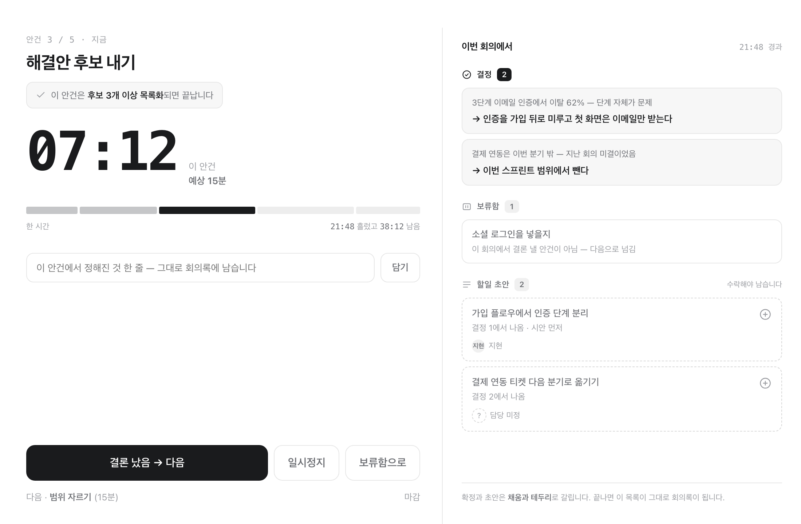
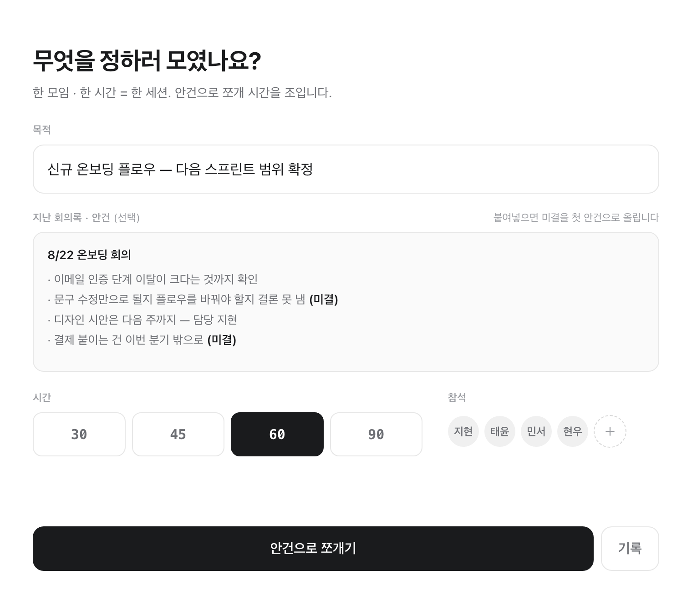
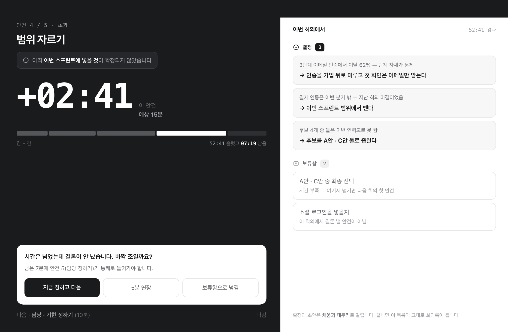

녹음은 회의마다 켭니다
기본은 꺼짐이고, 세션을 열 때 그 회의만 켭니다.켜면 공유 화면에 녹음 중 이 떠서 방 전체가 알고, 소리는 이 기기에만 남습니다.
바짝은 회의를 진행하는 동안 띄워 놓는 맥용 앱입니다. 목적 한 줄을 안건으로 쪼개고, 안건마다 무엇이 나와야 끝나는지를 걸어둡니다. 한 시간이 지나면 슬랙에 그대로 붙는 회의록이 나옵니다. 0.2.0 부터는 녹음을 켜두면 치지 않은 말도 기기 안에서 글이 되어 회의록 초안으로 돌아옵니다.

진행 중 · 왼쪽은 압력, 오른쪽은 산출.오른쪽에 쌓인 것이 그대로 회의록이 됩니다.
사회자가 없으면 회의는 대체로 이렇게 흐릅니다. 타이머를 켜도 소용이 없습니다. 타이머는 시간이 다 되면 끝났다고 말하지만, 회의는 그렇지 않기 때문입니다.
“온보딩 얘기 좀 하죠”로 시작하면 어디서부터 어디까지가 이 회의인지 아무도 모릅니다.
세 번째 안건에서 이미 절반을 썼다는 걸 아무도 모른 채 이야기가 계속됩니다.
“오늘 좋았네요” 하고 흩어지면, 다음 주에 같은 자리에서 같은 이야기를 다시 합니다.
목적 한 줄을 넣으면 안건으로 쪼갠 계획이 올라옵니다. 그대로 쓰지 않아도 됩니다. 고치고, 합치고, 다시 쪼갭니다. 다만 안건마다 끝나는 조건이 붙고, 조건이 빈 안건이 하나라도 있으면 시작 버튼이 잠깁니다.

세션 열기 · 지난 회의록을 그대로 붙여넣으면 (미결) 로 남은 것을 찾아 오늘의 첫 안건으로 올립니다.
계획 · 신규 온보딩 플로우
이렇게 쪼갰어요 · 수락하면 시작 (편집 가능) · 안건마다 끝나는 조건이 붙습니다
“이 안건은 후보 3개 이상 목록화되면 끝납니다”
끝났는지 판정할 수 없는 말은 조건이 될 수 없습니다. 눈에 보이는 산출물이어야 합니다.
진행 화면은 둘로 나뉩니다. 왼쪽은 남은 시간과 끝나는 조건, 오른쪽은 지금까지 나온 것. 한 줄 치고 Enter 면 결정, 버튼으로 보류·할일.“상황 → 결정”으로 쓰면 두 줄로 갈립니다.결론만 적으면 한 달 뒤에 왜 그렇게 정했는지 아무도 기억하지 못합니다.
다른 창에서 자료를 띄워도 회의는 안 끊깁니다. 항상 위에 뜨는 미니 HUD가 남은 시간과 지금 안건을 계속 붙여 보여주고, 손은 키보드에서 떨어지지 않습니다.
바짝에는 색이 없습니다. 빨강도 초록도 쓰지 않습니다. 대신 시간을 넘긴 순간 왼쪽 절반이 통째로 반전됩니다.소리치는 것은 시간이지 결정이 아니라서, 오른쪽에 쌓인 것은 그대로 둡니다. 그리고 그 자리에서 지금 정하고 넘어갈지, 5분을 더 쓸지, 보류함으로 넘길지 고릅니다.

+02:41 · “남은 7분에 안건 5가 통째로 들어가야 합니다.” 남은 시간까지 계산해서 말해 줍니다.
회의 중에 담은 것이 곧 회의록입니다. 따로 정리하는 시간이 없습니다. 못 끝낸 것은 보류함에 남았다가 다음 회의를 여는 순간 첫 안건으로 올라옵니다.
회의록 · 안건마다 무엇이 나왔는지
결정·보류·할일을 안건 아래 묶어서 보여줍니다 · 따로 나열하면 “언제 왜 정했는지”가 사라지기 때문입니다.
회의록 복사를 누르면 아래 마크다운이 그대로 클립보드로 갑니다. 슬랙·노션에 붙습니다.
# 신규 온보딩 플로우 — 다음 스프린트 범위 확정 2026-09-05 · 60분 · 5안건 중 4개 결론 · 참석 지현 · 태윤 · 민서 · 현우 ## 결정 - **인증을 가입 뒤로 미루고 첫 화면은 이메일만 받는다** - 3단계 이메일 인증에서 이탈 62% — 단계 자체가 문제 - **후보를 A안 · C안 둘로 좁힌다** - 후보 4개 중 둘은 이번 인력으로 못 함 ## 보류 — 다음 회의 첫 안건 - A안 · C안 중 최종 선택 (시간 부족 — 여기서 넘기면 다음 회의 첫 안건) - 소셜 로그인을 넣을지 (이 회의에서 결론 낼 안건이 아님) ## 할일 - [ ] 가입 플로우에서 인증 단계 분리 — 지현 · 9/12 - [ ] A안 · C안 공수 산정해 오기 — 현우 · 9/10 ## 안건별 시간 | 안건 | 끝나는 조건 | 예상 | 실제 | |---|---|---|---| | 지난 회의 미결 훑기 | 이월할 것을 3개 이하로 추림 | 8분 | 06:20 | | 이탈 지점 데이터 확인 | 가장 큰 이탈 구간 한 곳에 합의 | 12분 | 13:40 | | 해결안 후보 내기 | 후보 3개 이상 목록화 | 15분 | 14:10 | | 범위 자르기 | 이번 스프린트에 넣을 것을 확정 | 15분 | 17:41 | | 담당 · 기한 정하기 | 할일마다 담당자 한 명씩 | 10분 | 08:09 |
안건별 시간이 표로 남습니다 · 15분으로 잡은 안건이 17:41 걸렸다는 사실이 다음 회의의 계획을 고칩니다.
회의를 열 때 녹음을 켜두면, 마감하는 순간 녹음이 이 기기 안에서 글로 바뀝니다. "요약해줘"를 누르지 않습니다. 마감이 마지막 조작입니다. 일시정지하면 녹음도 함께 멈추기 때문에, 발화는 말이 나온 그 안건 아래에 붙습니다.
세팅에서 체크 하나로 그 회의만 켭니다.켜면 방 전체가 보는 공유 화면에 녹음 중 이 떠서, 표시가 곧 참석자 고지가 됩니다.
전사가 끝나면 AI 가 결정·보류·할일 초안을 제안합니다. 점선 카드로 와서, 담아야 회의록에 들어갑니다. 사람이 친 것과 섞이지 않습니다. 항목마다 근거 시각이 붙어 있고, 누르면 그 자리의 발화가 펼쳐집니다. 근거를 못 짚은 항목은 근거 없음으로 옵니다. 시각을 지어내지 않습니다.
마감 후 · AI 가 전사에서 뽑은 초안
담당자는 참석자 목록에 있는 이름만 붙습니다.AI 가 지어낸 이름은 버려집니다.
셋 다 선을 지킵니다. 소리는 이 기기에만 남고, 전사는 macOS 내장 음성 인식이 기기 안에서 합니다. 오디오는 어디로도 나가지 않습니다. AI 초안만이 전사 글을 내 AI(claude CLI 나 내 키)로 보내는 유일한 경로이고, 따로 끌 수 있으며, 나갔다면 마감 화면이 그 사실을 밝힙니다. 진행 중 실시간 전사는 진행자 화면의 접이식 상자에만 뜹니다. 틀린 전사를 방 전체에 보여주지 않습니다.
같은 앱이 혼자 일할 때도 돕니다. 업무 하나에 한 시간을 걸고 5~15분짜리 스텝으로 쪼갠 뒤, 현재 한 스텝만 크게 띄웁니다. 나머지는 가립니다. 회의 모드가 결론으로 끝난다면, 혼자 모드는 시간으로 끝납니다.
업무 한 줄만으로는 매번 다르게 쪼개져 신뢰가 안 갑니다. 그래서 템플릿은 AI 를 부르지 않고 늘 같은 뼈대를 주고 비중만 총 시간에 맞춰 폅니다.
고르지 않으면 기존대로 쪼개 줍니다.
회의에서 오가는 말은 밖으로 나가면 곤란한 것이 많습니다. 그래서 나가는 길을 아예 만들지 않았습니다.
기본은 꺼짐이고, 세션을 열 때 그 회의만 켭니다.켜면 공유 화면에 녹음 중 이 떠서 방 전체가 알고, 소리는 이 기기에만 남습니다.
마감하면 macOS 내장 음성 인식이 기기 안에서 글로 바꿉니다.오디오 서버도, 오디오 비용도 없습니다. 화자는 나누지 않습니다.
회의는 진행자 기기에서 돌고 기록은 그 기기의 파일 한 장에 남습니다.로그인할 곳이 없습니다.
기본값이 끄기입니다.꺼두면 한 글자도 기기 밖으로 나가지 않고, 균등 배분으로 그대로 돌아갑니다.
내 기기의 claude CLI 나 내 API 키를 씁니다.우리 서버를 경유하지 않고, 구독료도 우리에게 오지 않습니다.
넣을 수 있었지만 넣지 않았습니다. 넣는 순간 다른 제품이 되기 때문입니다.
Apple Silicon 맥용입니다. 애플 서명과 공증을 마쳤으니 그냥 열립니다. 계정을 만들 것도, 연결할 것도 없습니다.